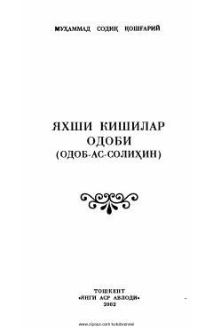

YKSharqona odob-axloq qoidalari va yuksak insoniy fazilatlar haqidagi ma'naviy risola.
Ushbu asar sharqona odob-axloq qoidalari va insoniy fazilatlar haqida hikoya qiladi. Kitobda kundalik hayotdagi munosabatlar, muomala madaniyati va yuksak axloqiy mezonlar qadimiy an'analar asosida yoritib berilgan.